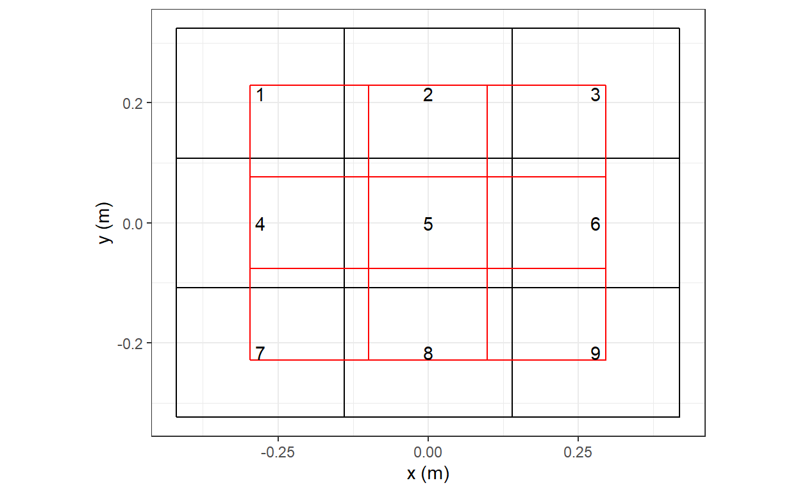
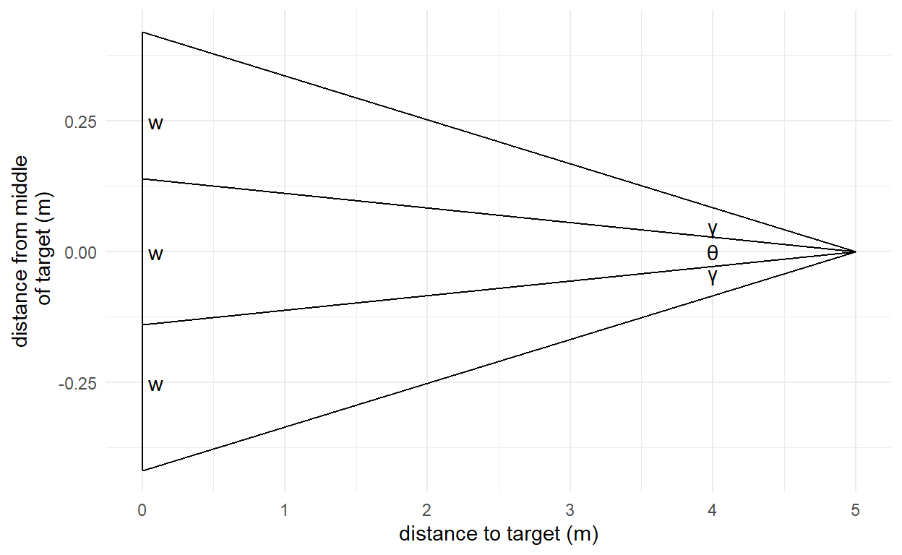
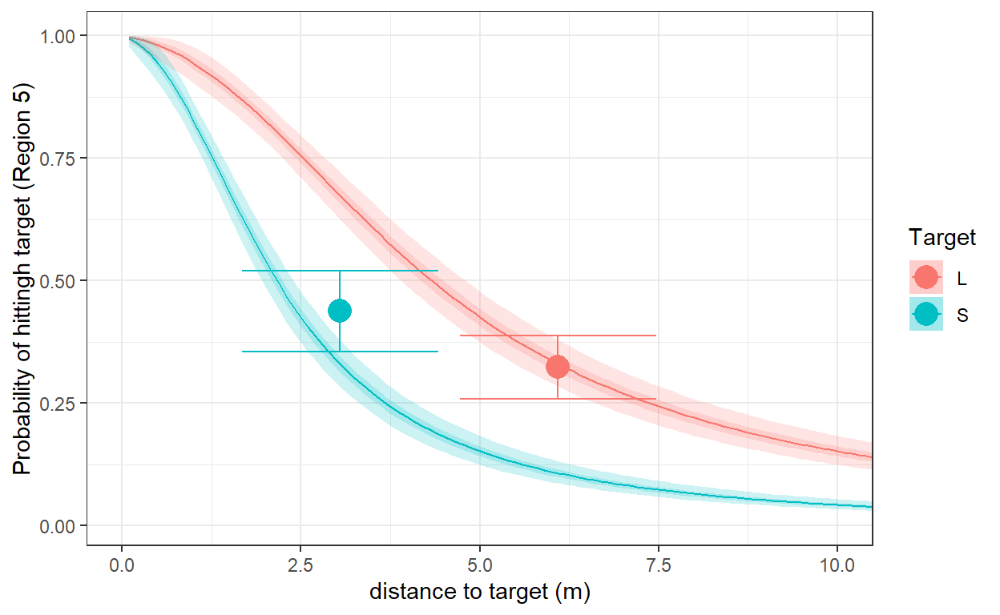
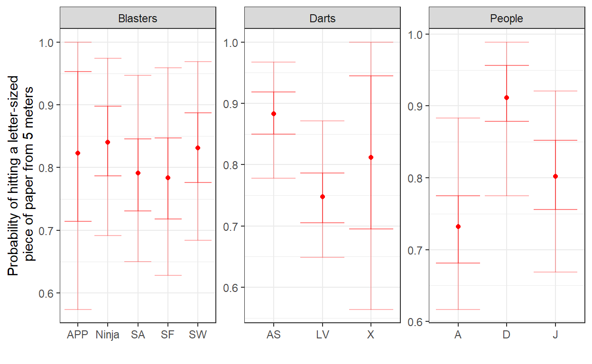

More geometry and Stan, this time with Nerf blasters
During COVID lockdown, the kids (and their dad, for that matter) were a bit obsessed with Nerf blasters. Since dad is also a stats nerd, it didnt take too long until we started collecting data on this. So I built a target out of some paper and cardboard, and we went down to the basement with some blasters and darts. What follows is me actually getting to analyze the data, 5 years on.
If youre interested in this kind of stuff, you may also be interested in my other posts on NFL field goal accuracy and Australian football set shot accuracy, which were inspired by Andrew Gelmans golf putting model.
I wanted to have data that was more informative than just hit and miss, so I built a target with nine regions. On one side of the target each region was a letter-sized piece of paper, and on the other side of the target each region was a letter sized piece of paper folded in half. I made these two targets because I wanted to collect data for both short- and long-ragne shots. Having the larger-sized target turned out to be a good one to have for shooting from a range of 20 feet, and the smaller-sized target was better for shooting from ten feet (our basement had 2-foot floor tiles, so this was very easy to measure). By this, I mean that for these ranges, it turned out that each target had a very good chance of actually being hit, but there was a also good spread of hits in different regions. Here is what the target looked like:

In the data, I have the region of the target that was hit, 0-9, with 0 indicating the entire target was missed.
Apart from varying the distance and target size, the data can be sliced three different ways based on (i) who was shooting, (ii) which blaster was being used, and (iii) which darts were being used.
Firstly, we had three people generating the data:
Dsum<-"../../data/NERF.csv" |>
read.csv() |>
filter(Blaster!="") |>
pivot_longer(
cols = X0:X9
) |>
group_by(Blaster,Darts,Person) |>
summarize(
shots = sum(value)
)
Dsum |>
group_by(Person) |>
summarize(
shots=sum(shots)
) |>
kbl() |>
kable_classic(full_width=FALSE)| Person | shots |
|---|---|
| A | 62 |
| D | 181 |
| J | 98 |
Here A and J are my kids (at the time aged 9 and 5, respectively), and I am D for Dad. Yes, I may have gone down to the basement by myself a few times in the interest of statistical rigor.
Next, we had five different blasters to shoot at the target:
Dsum |>
group_by(Blaster) |>
summarize(
shots=sum(shots)
) |>
kbl() |>
kable_classic(full_width=FALSE)| Blaster | shots |
|---|---|
| APP | 18 |
| Ninja | 80 |
| SA | 117 |
| SF | 20 |
| SW | 106 |
These were:
Finally, we had three different kinds of darts:
Dsum |>
group_by(Darts) |>
summarize(
shots=sum(shots)
) |>
kbl() |>
kable_classic(full_width=FALSE)| Darts | shots |
|---|---|
| AS | 225 |
| LV | 98 |
| X | 18 |
These were:
I will start by ignoring all three of these dimensions of heterogeneity, but will add them in after the first pooled estimation.
This is going to be another angle accuracy model, so we need expressions for the angles that one can shoot through in order to hit each region of the target. Here is a picture of the problem:

Let \(w\) be the length of the piece of paper, and \(x\) be the distance to the target, then:
\[ \begin{aligned} \tan\left(\frac{\theta}{2}\right)&=\frac{w}{2x}\\ \frac{\theta}{2}&=\tan^{-1}\left(\frac{w}{2x}\right)\\ \tan\left(\frac{\theta}{2}+\gamma\right)&=\frac{3w}{2x}\\ \gamma&=\tan^{-1}\left(\frac{3w}{2x}\right)-\frac{\theta}{2} \end{aligned} \]
So if you hit the center of the target, you must have shot at an angle of between \(-\frac{\theta}{2}\) and \(+\frac{\theta}{2}\) radians; if you hit the top part of the target, you must have shot at an angle between \(\frac{\theta}{2}\) and \(\frac{\theta}{2}+\gamma\) radians; and so on.
Once we have these angles, we can assume a distribution for the angle accuracy. I chose a Students-\(t\) distribution centered on zero for this. It would have made things simpler to use a normal, but based on my experience with Australian football set shots, the \(t\) distribution is much better at modeling data with more than two outcomes (and the Australian football problem is just the Nerf darts problem in two dimension rather than three). Therefore the probability of hitting (say) the middle of the target is:
\[ F_t\left(\frac{\theta}{2}\mid 0,\nu,\sigma\right)-F_t\left(-\frac{\theta}{2}\mid 0,\nu,\sigma\right) \]
And the probability of hitting (say) one of the outer regions of the target is:
\[ F_t\left(\frac{\theta}{2}+\gamma\mid 0,\nu,\sigma\right)-F_t\left(\frac{\theta}{2}\mid 0,\nu,\sigma\right) \]
I assume that the vertical accuracy is independent of the horizontal accuracy, and so we can just multiply these probabilities together. I assume that \(\sigma\) and \(\nu\) are different for horizontal and vertical angle accuracy, so the model has four parameters.
First, I estimate a model treating each kind of dart, blaster, and person as equal. Here is the Stan program I wrote to do this:
data {
int<lower=0> N; // number of rows of data
vector[N] count; // count of the number of times that outcome occurred
vector[N] angle_x_lb; // lower bound for horizontal angle
vector[N] angle_x_ub; // upper bound of horizontal angle
vector[N] angle_y_lb; // lower bound of vertical angle
vector[N] angle_y_ub; // upper bound of vertical angle
vector[N] miss; // =1 if the netire target was missed, zero otherwise
vector[2] whLetter; // dimensions of a letter-sized piece of paper, in meters. Long side is element 1
// priors for parameters, both log-normal
vector[2] prior_sigma;
vector[2] prior_nu;
// indicator to use the data or not (useful for prior calibration)
int<lower=0,upper=1> UseData;
}
parameters {
real<lower=0> sigma_x; // scale in horizontal direction
real<lower=0> nu_x; // df in horizontal direction
real<lower=0> sigma_y; // scale in vertical direction
real<lower=0> nu_y; // df in vertical direction
}
transformed parameters {
/* Compute log probability of each outcome. I did this in the transformed parameters
block because I was debugging the code and wanted to see what the predictions were.
*/
vector[N] lpr;
for (ii in 1:N) {
lpr[ii] = log(student_t_cdf(angle_x_ub[ii], nu_x, 0.0, sigma_x)-student_t_cdf(angle_x_lb[ii], nu_x, 0.0, sigma_x))
+
log(student_t_cdf(angle_y_ub[ii], nu_y, 0.0, sigma_y)-student_t_cdf(angle_y_lb[ii], nu_y, 0.0, sigma_y))
;
}
// update for misses
lpr = lpr.*(1.0-miss)+log(1.0-exp(lpr)).*miss;
vector[N] prob = exp(lpr);
}
model {
// if we are using the data, increment the likelihood
if (UseData==1) {
target += count.*lpr;
}
// priors
target += lognormal_lpdf(sigma_x | prior_sigma[1],prior_sigma[2]);
target += lognormal_lpdf(sigma_y | prior_sigma[1],prior_sigma[2]);
target += lognormal_lpdf(nu_x | prior_nu[1],prior_nu[2]);
target += lognormal_lpdf(nu_y | prior_nu[1],prior_nu[2]);
}
generated quantities {
/* Make some predictions. Here we will compute the probability of hitting a
letter-sized piece of paper and a half-letter-size piece of paper at increments
of 10cm from the target. I.e. pr_letter[20] is the probability of hitting a
letter-sized piece of paper from 2m away.
*/
vector[200] pr_letter;
vector[200] pr_halfletter;
for (ii in 1:200) {
real dist = (ii+0.0)/10.0;
real angle_x = atan(whLetter[1]/2/dist);
real angle_y = atan(whLetter[2]/2/dist);
pr_letter[ii] = exp(log(student_t_cdf(angle_x, nu_x, 0.0, sigma_x)-student_t_cdf(-angle_x, nu_x, 0.0, sigma_x))
+
log(student_t_cdf(angle_y, nu_y, 0.0, sigma_y)-student_t_cdf(-angle_y, nu_y, 0.0, sigma_y))
)
;
angle_x = atan(whLetter[1]/4/dist);
angle_y = atan(whLetter[2]/4/dist);
pr_halfletter[ii] = exp(log(student_t_cdf(angle_x, nu_x, 0.0, sigma_x)-student_t_cdf(-angle_x, nu_x, 0.0, sigma_x))
+
log(student_t_cdf(angle_y, nu_y, 0.0, sigma_y)-student_t_cdf(-angle_y, nu_y, 0.0, sigma_y))
)
;
}
}And here is the models prediction for hitting the center of the target (i.e.Region 5) against the data:
Fit<-"pooled.csv" |>
read.csv() |>
mutate(
dist = parse_number(par)/10
) |>
filter(!is.na(dist) & !grepl("prob",par) & !grepl("lpr",par)) |>
mutate(
Target = ifelse(grepl("pr_halfletter",par),"S","L")
)
D<-"../../data/NERF.csv" |>
read.csv() |>
filter(Blaster!="") |>
pivot_longer(
cols = X0:X9
)|>
group_by(Distance,Target,name) |>
summarize(
count=sum(value)
) |>
group_by(Distance,Target) |>
summarize(
pr = sum(ifelse(name=="X5",count,0))/sum(count),
n = sum(count)
) |>
mutate(
se = sqrt(pr*(1-pr)/n),
Distance = Distance*0.3048
)
(
ggplot(Fit,aes(x=dist,fill=Target))
+geom_line(aes(y=mean,color=Target))
+geom_ribbon(aes(ymin=X25.,ymax=X75.),alpha=0.2)
+geom_ribbon(aes(ymin=X2.5.,ymax=X97.5.),alpha=0.2)
+geom_point(data=D,aes(x=Distance,y=pr,color=Target,fill=Target),size=5)
+geom_errorbar(data=D,aes(x=Distance,ymin=pr-1.96*se,ymax=pr+1.96*se,color=Target))
+theme_bw()
+xlab("distance to target (m)")
+ylab("Probability of hittingh target (Region 5)")
+coord_cartesian(xlim=c(0,10))
)
That is, the red part of the plot shows the probability of hitting a letter-sized piece of paper. Shaded regions show 50% and 95% Bayesian credible regions.
Now, we will estimate a model allowing for each person, dart, and blaster to have their own effect on accuracy. Specifically, I will assume that the effects of each of these is additive (before doing the exponential transform, which makes sure parameters are positive). That is:
\[ \sigma_{x,p,d,b}=\exp\left(B^\mathrm{person}_{p,\sigma_x}+B^\mathrm{dart}_{d,\sigma_x}+B^\mathrm{blaster}_{b,\sigma_x}\right) \] where \(p\), \(d\), and \(b\) index the person, dart, and blaster, respectively. This is done similarly for \(\sigma_y\). Unfortunately, I tried the Students-\(t\) specification for this and got a whole lot of divergent transitions, so what I will present here will be just for normal angle errors.
As these parameters are all going to be a mess to interpret, in the generated quantities block I generate predictions for the probability of hitting a letter-sized piece of paper from a distance of 5 meters. Here is the Stan program that does this:
data {
int<lower=0> N;
vector[N] count;
vector[N] angle_x_lb;
vector[N] angle_x_ub;
vector[N] angle_y_lb;
vector[N] angle_y_ub;
vector[N] miss;
vector[2] whLetter;
vector[2] prior_sigma;
int ndarts;
int dartid[N];
int nblasters;
int blasterid[N];
int npeople;
int personid[N];
}
parameters {
vector[ndarts] Bdart_sigma_x;
vector[nblasters] Bblaster_sigma_x;
vector[npeople] Bperson_sigma_x;
vector[ndarts] Bdart_sigma_y;
vector[nblasters] Bblaster_sigma_y;
vector[npeople] Bperson_sigma_y;
}
transformed parameters {
}
model {
vector[N] sigma_x = exp(
Bdart_sigma_x[dartid]+Bblaster_sigma_x[blasterid]+Bperson_sigma_x[personid]
);
vector[N] sigma_y = exp(
Bdart_sigma_y[dartid]+Bblaster_sigma_y[blasterid]+Bperson_sigma_y[personid]
);
vector[N] lpr;
for (ii in 1:N) {
lpr[ii] = log(normal_cdf(angle_x_ub[ii], 0.0, sigma_x[ii])-normal_cdf(angle_x_lb[ii], 0.0, sigma_x[ii]))
+
log(normal_cdf(angle_y_ub[ii],0.0, sigma_y[ii])-normal_cdf(angle_y_lb[ii], 0.0, sigma_y[ii]))
;
}
lpr = lpr.*(1.0-miss)+log(1.0-exp(lpr)).*miss;
target += count.*lpr;
target += normal_lpdf(Bdart_sigma_x | prior_sigma[1],prior_sigma[2]);
target += normal_lpdf(Bperson_sigma_x | prior_sigma[1],prior_sigma[2]);
target += normal_lpdf(Bblaster_sigma_x | prior_sigma[1],prior_sigma[2]);
target += normal_lpdf(Bdart_sigma_y | prior_sigma[1],prior_sigma[2]);
target += normal_lpdf(Bperson_sigma_y | prior_sigma[1],prior_sigma[2]);
target += normal_lpdf(Bblaster_sigma_y | prior_sigma[1],prior_sigma[2]);
}
generated quantities {
/* Predictions for a distance of 5m on the large target
*/
vector[nblasters] pr_blaster;
vector[ndarts] pr_dart;
vector[npeople] pr_person;
{
real dist = 5.0;
real angle_x = atan(whLetter[1]/2/dist);
real angle_y = atan(whLetter[2]/2/dist);
real sigma_x;
real nu_x;
real sigma_y;
real nu_y;
for (bb in 1:nblasters) {
sigma_x = exp(Bblaster_sigma_x[bb]+mean(Bdart_sigma_x)+mean(Bperson_sigma_x));
sigma_y = exp(Bblaster_sigma_y[bb]+mean(Bdart_sigma_y)+mean(Bperson_sigma_y));
pr_blaster[bb] = normal_cdf(angle_x, 0.0, sigma_x)-normal_cdf(-angle_x_lb, 0.0, sigma_x);
}
for (dd in 1:ndarts) {
sigma_x = exp(Bdart_sigma_x[dd]+mean(Bblaster_sigma_x)+mean(Bperson_sigma_x));
sigma_y = exp(Bdart_sigma_y[dd]+mean(Bblaster_sigma_y)+mean(Bperson_sigma_y));
pr_dart[dd] = normal_cdf(angle_x, 0.0, sigma_x)-normal_cdf(-angle_x_lb, 0.0, sigma_x);
}
for (pp in 1:npeople) {
sigma_x = exp(Bperson_sigma_x[pp]+mean(Bdart_sigma_x)+mean(Bblaster_sigma_x));
sigma_y = exp(Bperson_sigma_y[pp]+mean(Bdart_sigma_y)+mean(Bblaster_sigma_y));
pr_person[pp] = normal_cdf(angle_x, 0.0, sigma_x)-normal_cdf(-angle_x_lb, 0.0, sigma_x);
}
}
}Instead of looking at the individual estimates of each B coefficient, I will focus on the models prediction for each group.
lookup<-"covariates_lookup.csv" |>
read.csv() |>
select(-X)
Fit<-"covariates.csv" |>
read.csv() |>
select(-X) |>
filter(grepl("pr_",par)) |>
mutate(
id = par |> parse_number(),
group = ifelse(grepl("person",par),"People",
ifelse(grepl("dart",par),"Darts", "Blasters")
)
) |>
full_join(lookup,by=c("group","id")) |>
select(-par,-id) |>
group_by(group) |>
mutate(rank = rank(mean))
(
ggplot(Fit,aes(x=label))
+geom_point(aes(y=mean),color="red")
+facet_wrap(~group,scales="free")
+geom_errorbar(aes(ymin=X2.5.,ymax = X97.5.),alpha=0.3,color="red")
+geom_errorbar(aes(ymin=X25.,ymax = X75.),alpha=0.5,color="red")
+theme_bw()
+xlab("")
+ylab("Probability of hitting a letter-sized\n piece of paper from 5 meters")
)
Here the dots show posterior means, and error bars show 50% and 95% credible regions. So there is quite a bit of posterior uncertainty left in all of these predictions. That said, the two stand-out improvements to accuracy are me (D) using the accustrike (AS) darts.
From collecting the data, it became apparent that some blasters had a much larger variance of the speed at which the dart left the blaster than others. As such, sometimes gravity had very little to do with the \(y\)-coordinate (when it was fast), and other times it had a lot to do with it. I would love to incorporate velocity variation into the model, but it would probably need a richer dataset.
Furthermore, If I was to collect this kind of data again, I would vary the distance a bit more. According to the model, halving the distance and making the target half the size should result in the same probability of success. It would have been nicer to have some within-target variation in distance.
library(tidyverse)
library(rstan)
options(mc.cores =parallel::detectCores())
rstan_options(auto_write = TRUE)
whLetter <- c(0.2794,0.2159)
regionlist<-data.frame(
region = c(0,1,2,3,4,5,6,7,8,9),
X = c("miss","L","M","R","L","M","R","L","M","R"),
Y = c("miss","U","U","U","C","C","C","D","D","D")
)
D<-"data/NERF.csv" |>
read.csv() |>
mutate(
Distance = 0.3048*Distance # convert into meters
) |>
pivot_longer(
cols = X0:X9,
names_to = "region",
values_to = "count"
) |>
filter(!is.na(Distance)) |>
mutate(
region = region |> parse_number()
) |>
full_join(
regionlist,
by = "region"
) |>
group_by(
Target,Blaster,Darts,Distance,Person,count,X,Y
) |>
summarize(
count = sum(count)
) |>
mutate(
wLetter = whLetter[1]*ifelse(Target=="L",1,0.5),
hLetter = whLetter[2]*ifelse(Target=="L",1,0.5),
theta.x = 2*atan(wLetter/2/Distance),
gamma.x = atan(3*wLetter/2/Distance)-theta.x/2,
theta.y = 2*atan(hLetter/2/Distance),
gamma.y = atan(3*hLetter/2/Distance)-theta.y/2,
angle.x.lb = ifelse(X=="M",-theta.x/2,ifelse(X=="miss",-theta.x/2-gamma.x,theta.x/2)),
angle.x.ub = ifelse(X=="M",theta.x/2,ifelse(X=="miss",theta.x/2+gamma.x,theta.x/2+gamma.x)),
angle.y.lb = ifelse(Y=="C",-theta.y/2,ifelse(Y=="miss",-theta.y/2-gamma.y,theta.y/2)),
angle.y.ub = ifelse(Y=="C",theta.y/2,ifelse(Y=="miss",theta.y/2+gamma.y,theta.y/2+gamma.y)),
miss = ifelse(X=="miss" & Y=="miss",1,0)
)
file<-"_posts/2025-09-20-nerf-accuracy/pooled.csv"
if (!file.exists(file)) {
pooled<-"_posts/2025-09-20-nerf-accuracy/pooled.stan" |>
stan_model()
d<-D |>
group_by(
angle.x.lb,angle.x.ub,angle.y.lb,angle.y.ub,miss
) |>
summarize(
count = sum(count)
)
dStan<-list(
N = dim(d)[1],
count = d$count,
angle_x_lb = d$angle.x.lb,
angle_x_ub = d$angle.x.ub,
angle_y_lb = d$angle.y.lb,
angle_y_ub = d$angle.y.ub,
miss = d$miss,
whLetter = whLetter,
prior_sigma = c(-1,1),
prior_nu = c(log(15),1),
UseData=1
)
Fit<-pooled |>
sampling(
data=dStan,
seed=42,
control = list(adapt_delta = 0.99),
iter = 2000
)
summary(Fit)$summary |>
data.frame() |>
rownames_to_column(var = "par") |>
write.csv(file)
}
file<-"_posts/2025-09-20-nerf-accuracy/covariates.csv"
if (!file.exists(file) | TRUE) {
covariates<-"_posts/2025-09-20-nerf-accuracy/covariates_normal.stan" |>
stan_model()
d<-D |>
group_by(
angle.x.lb,angle.x.ub,angle.y.lb,angle.y.ub,miss,Person,Darts,Blaster
) |>
summarize(
count = sum(count)
) |>
ungroup() |>
mutate(
dartid = Darts |> factor() |> as.numeric(),
blasterid = Blaster |> factor() |> as.numeric(),
personid = Person |> factor() |> as.numeric()
)
lookup<-rbind(
d |>
group_by(Darts) |>
summarize(
id = mean(dartid)
) |>
rename(
label=Darts
) |>
mutate(
group = "Darts"
),
d |>
group_by(Person) |>
summarize(
id = mean(personid)
) |>
rename(
label=Person
) |>
mutate(
group = "People"
),
d |>
group_by(Blaster) |>
summarize(
id = mean(blasterid)
) |>
rename(
label=Blaster
) |>
mutate(
group = "Blasters"
)
)
lookup |>
write.csv("_posts/2025-09-20-nerf-accuracy/covariates_lookup.csv")
dStan<-list(
N = dim(d)[1],
count = d$count,
angle_x_lb = d$angle.x.lb,
angle_x_ub = d$angle.x.ub,
angle_y_lb = d$angle.y.lb,
angle_y_ub = d$angle.y.ub,
ndarts = d$dartid |> max(),
dartid = d$dartid,
npeople = d$personid |> max(),
personid = d$personid,
nblasters = d$blasterid |> max(),
blasterid = d$blasterid,
miss = d$miss,
whLetter = whLetter,
prior_sigma = c(-1,1)
)
Fit<-covariates |>
sampling(
data=dStan,
seed=42,
control = list(adapt_delta = 0.99),
iter = 2000
)
summary(Fit)$summary |>
data.frame() |>
rownames_to_column(var = "par") |>
write.csv(file)
}